Mechanical Behavior of Metals
This is a very central topic:
What happens when we apply external forces to metals?
If we stretch a spring too far, will it return to its original shape?
No — it will experience permanent deformation.
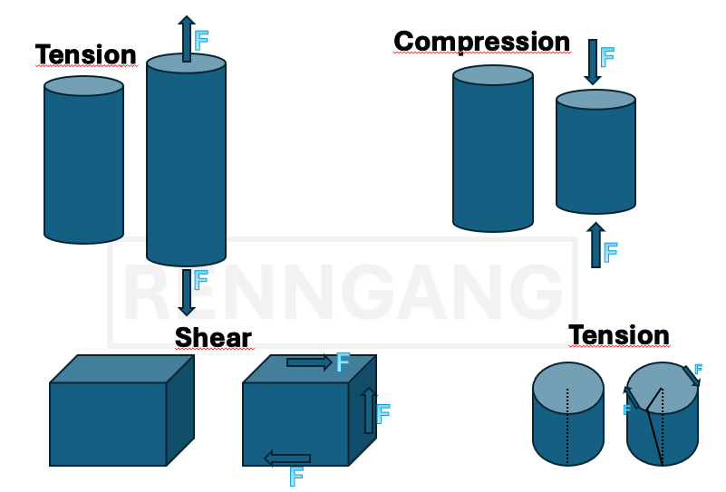
We have different types of stresses: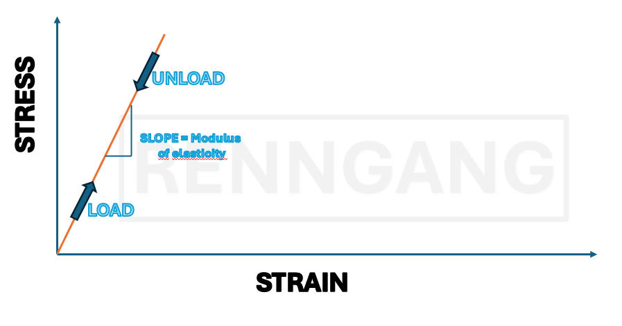
Elastic Deformation
Let’s begin by looking at elastic deformation. Imagine stretching a spring, it deforms, but the same thing happens down at the atomic level. When we stretch a crystalline material, its crystal structure is also stretched. This means that the atomic spacing within the crystal lattice increases correspondingly. As long as the deformation is elastic, the atomic bonds do not break, they remain intact. A key characteristic of elastic deformation is that it is proportional to the applied force: If we double the force, we double the deformation. The material also returns to its original shape once the applied force is removed.Hooke’s Law
The linear relationship between stress and strain is called Hooke’s Law.We also have more general definitions for stress and strain:
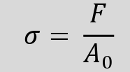
Nominal stress is defined as the force divided by the original cross-sectional area of the material. As long as we use the original (unloaded) area, we refer to it as A₀, and this is usually what we apply in calculations—especially while the material behaves in the linear elastic region.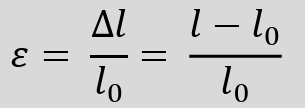
Strain is defined as the change in length divided by the original length:ε = ΔL / L₀
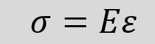
The relationship between stress and strain, within the elastic region, is given by Hooke’s Law:σ = E × ε
Where E is the Young’s modulus (or elastic modulus), which is a material-specific constant — often found in data tables. The modulus can also be determined experimentally through a tensile test, where stress is plotted against strain. The slope of the linear portion of the curve corresponds to the E-modulus.
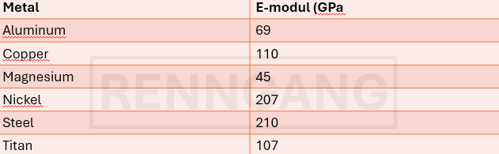
Here we see the Young’s modulus for various metals. The unit is pascal (Pa), but since the values are large, it’s usually expressed in gigapascals (GPa). The E-modulus reflects the stiffness of a material — its resistance to elastic deformation under load.Example Problem:
A copper rod with a length of 305 mm is subjected to a tensile stress of 276 MPa. Assuming elastic deformation, what is the elongation of the rod?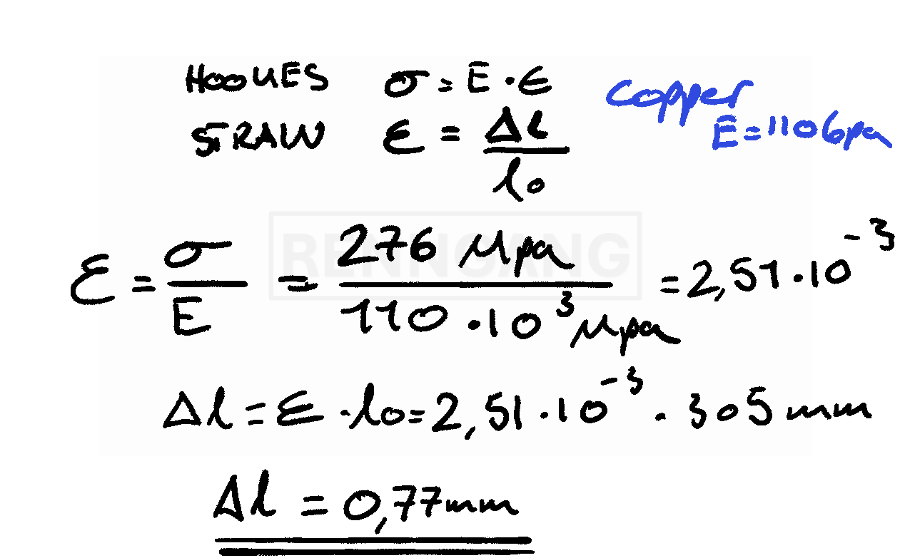
In problem-solving, we usually assume that the Young’s modulus (E-modulus) is constant — for example, at room temperature. But in reality, this is not always the case, as the modulus is actually temperature-dependent. This is because the E-modulus is essentially a measure of the bond strength within a material — that is, how strong the atomic bonds are. Therefore, different materials (and metals) have different E-moduli.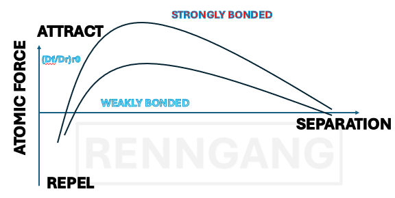
The curve shown for the two metals in the figure illustrates how much force must be applied before deformation occurs.A Bit About Shear Stress
The definition of shear stress is similar to that of tensile and compressive stress — it is also given as force per cross-sectional area. However, the difference lies in the direction of the force. In tension or compression, the force acts perpendicular to the cross-sectional area. In contrast, shear stress acts in the plane of the cross-section — parallel to it. Instead of elongating or compressing the material, shear stress causes a change in shape, known as shear deformation. If we imagine a cubic element, shear causes the right angle of the cube to distort. The angle by which it deforms is called the shear strain (γ). We can define a similar relationship between shear stress and shear strain — just like we did for tensile and compressive stress. So, we also have a Hooke’s law for shear:τ = G × γ,
where τ is shear stress, γ is shear strain, and G is the shear modulus.
Poisson’s Ratio
Poisson’s ratio describes the phenomenon that when we apply tensile forces to a material, it not only elongates, but also contracts laterally.Poisson’s ratio expresses the relationship between longitudinal strain and lateral strain. For example, if we stretch a cylindrical rod, Poisson’s ratio tells us how much the diameter decreases as a result of the applied tensile stress.
ν = − (lateral strain) / (longitudinal strain)
The negative sign indicates that one dimension increases while the other decreases.
Example with tensile force
A tensile force is applied to a brass rod so that its diameter is reduced by 2.5 × 10⁻³ mm. The original diameter is 10 mm. How large must the tensile force F be? Brass has:1) Find the lateral (transverse) strain
This is calculated as the change in diameter divided by the original diameter2) Find the longitudinal (axial) strain
Use Poisson’s ratio3) Use Hooke’s Law
To find the engineering stress (σ)4) Finally, find the force F
Use the formula for stress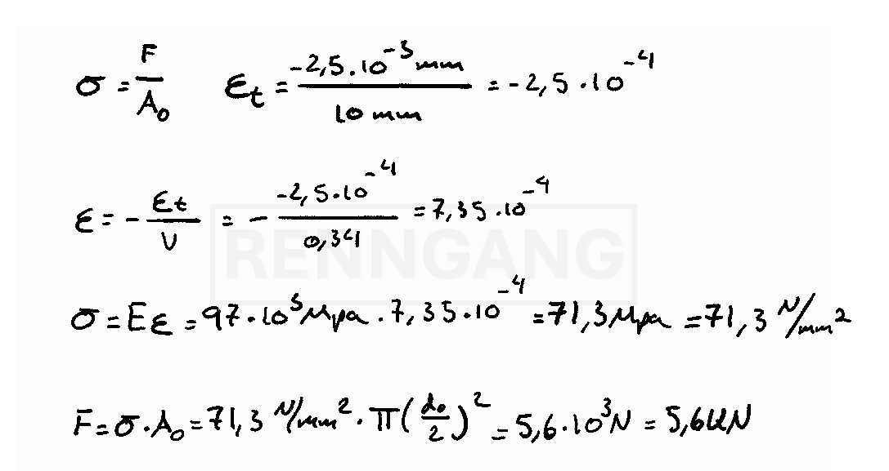
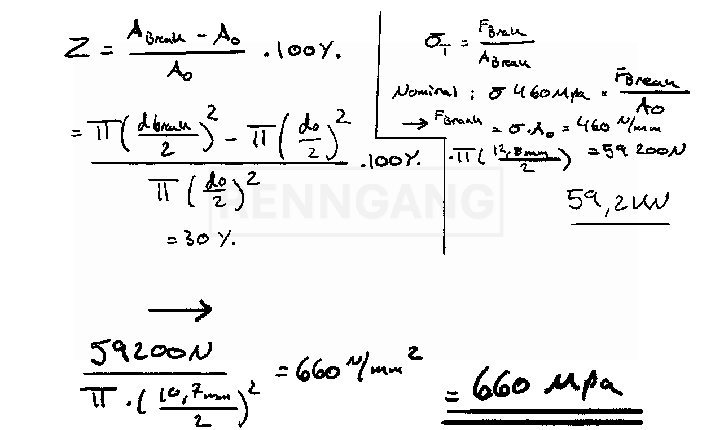
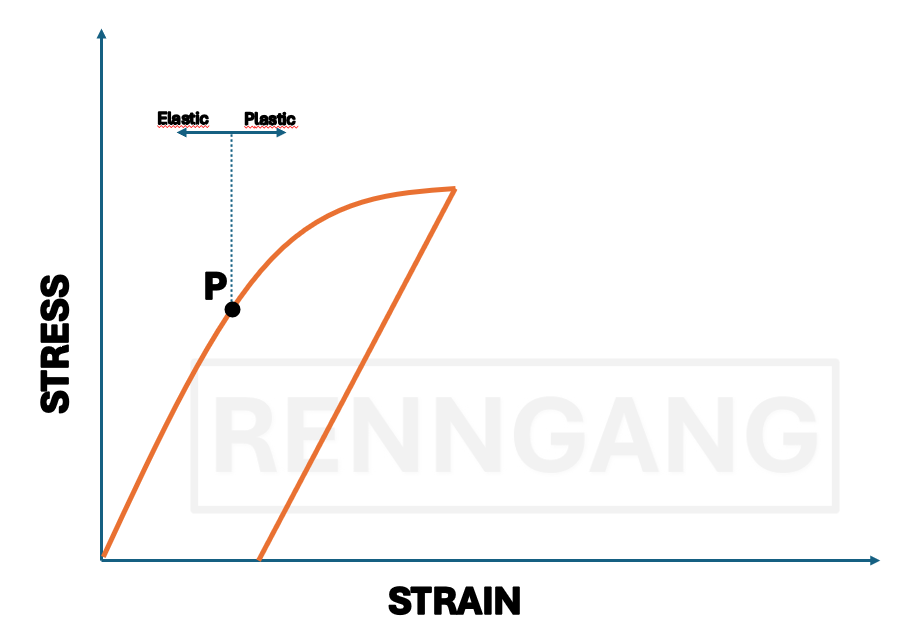
Plastic Deformation
Unlike elastic deformation, plastic deformation means that the material does not return to its original shape once the load is removed.This curve shows how the deformation behaves when the load is removed. Once we pass point P, the material can no longer return to its original length. The strain we read at the plastic strain point is the permanent deformation. We are particularly interested in the plastic properties of materials because many undergo plastic deformation during use. A material’s ability to plastically deform is important for processes such as shaping, forging, rolling, and forming.
In many cases, the yield strength is used as the primary measure of the strength of a structural metal.
A Measure of Ductility
A key measure of ductility is how much plastic deformation a material can undergo before it fractures.There are two common ways to assess this:
It is calculated as:
(Change in length / Original length) × 100%
Instead, you measure the diameter of the test specimen before and after fracture and calculate the percentage reduction.
Brittle materials fracture much earlier — with little or no plastic deformation — compared to ductile materials.
Strength vs. Ductility
Strong metals often exhibit relatively low elongation at break.Ductility can also be temperature-dependent.
For example, in iron, tensile tests performed at different temperatures demonstrate how ductility changes with temperature.
Resilience and Toughness
Resilience describes how much energy a material can absorb elastically.It is represented by the area under the linear portion of the stress–strain curve (i.e., within the elastic region).
Toughness, on the other hand, refers to a material’s resistance to fracture in the presence of flaws such as microcracks or other defects.
It is a combination of strength and ductility.
Toughness is quantified by the total area under the entire stress–strain curve, from zero up to fracture.